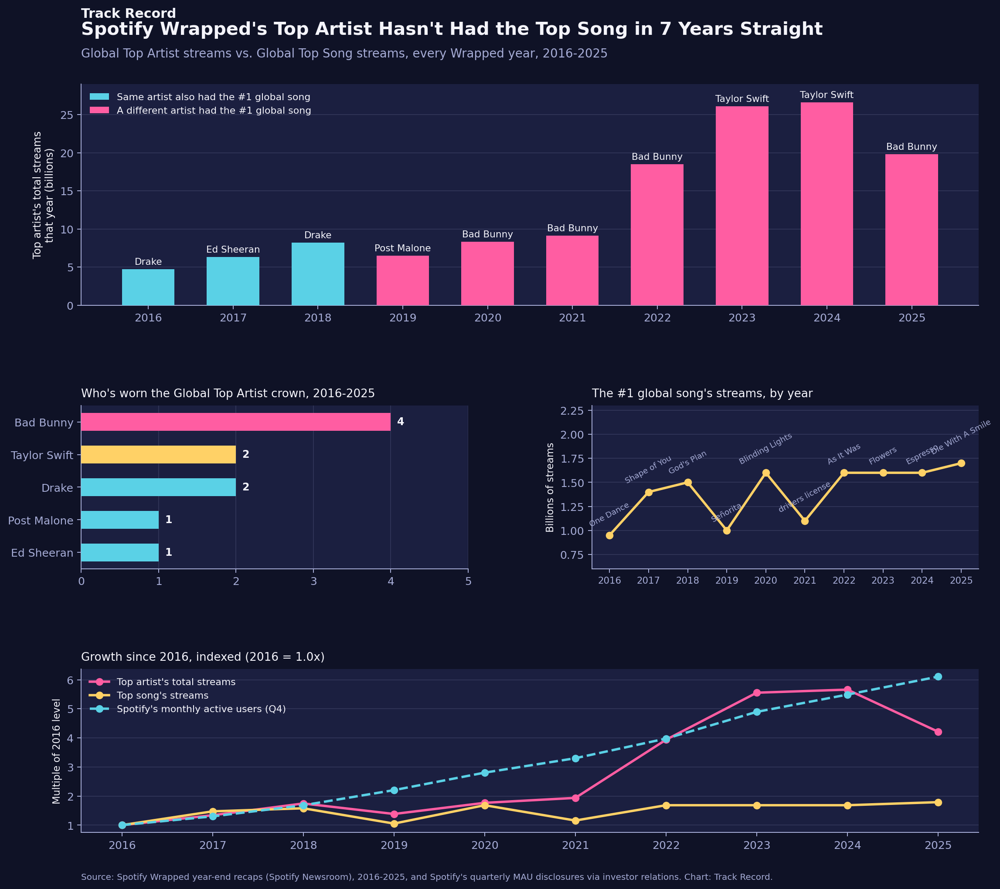

Spotify Wrapped's Top Artist Hasn't Had the Top Song in 7 Years Straight
Since 2019, the artist crowned Spotify's Global Top Artist has never also owned that year's most-streamed song — Bad Bunny, Taylor Swift, Drake and friends keep winning two completely different contests.

The dataset
Every number here comes from Spotify's own year-end "Wrapped" recaps, published on Spotify Newsroom each year and widely covered by outlets like Billboard, Variety, Rolling Stone and Forbes, which I cross-referenced against the original Spotify posts where available. For each of the ten Wrapped cycles run so far (2016 through 2025), I pulled the Global Top Artist and their total streams for the year, and the Global Top Song and its streams for the year — 10 years times two headline stats, plus the winning song and album title each year, for around 30 individually sourced facts in total. A fourth chart panel adds Spotify's quarterly monthly-active-user (MAU) disclosures from its investor relations filings (compiled by Backlinko from Spotify's own reporting), using the Q4 figure for each year as a stand-in for "users around the time Wrapped was compiled" — a deliberate simplification, since Wrapped reflects streams accumulated across the whole calendar year, not a single quarter's user count. Two precision caveats: streaming totals reported in press coverage sometimes vary slightly by source and by the exact date a figure was pulled ("God's Plan" has been cited anywhere from 1.1 to 1.67 billion 2018 streams depending on the article; I used the figure most consistently reported as Spotify's own year-end number, 1.5 billion), and "Señorita" (2019) was reported at "over 1 billion" streams for the year without a more precise figure ever published, so that data point is a floor, not an exact count. Both CSVs and the chart script are in this repo's data/ and scripts/ folders.
The method
- Built a table with one row per Wrapped year, recording the Global Top Artist, their total streams that year, the Global Top Song, its artist, and its streams.
- For each year, compared whether the artist behind the top song matched the artist crowned Global Top Artist, giving a simple yes/no per year used to color-code the headline chart.
- Tallied how many times each artist has worn the Global Top Artist crown across all ten years, and checked that those counts summed to exactly ten as a sanity check. Bad Bunny's tally of four wins also matches what Spotify itself announced in its 2025 recap, which called him the first artist ever to reach four Global Top Artist titles — an independent confirmation, not just this post's own count.
- For the growth panel, indexed three series — top artist streams, top song streams, and Spotify's Q4 monthly active users — all to their 2016 starting value, so they could be compared on the same scale despite being wildly different units (billions of streams vs. millions of users).
What it showed
Panel 1 — the crown split. In 2016, 2017 and 2018, the Global Top Artist (Drake, then Ed Sheeran, then Drake again) also had the single most-streamed song that year. Starting in 2019, that stopped happening — and it hasn't happened since. Post Malone was the top artist in 2019, but "Señorita" (Shawn Mendes & Camila Cabello) was the top song. Bad Bunny has won the artist crown four times without ever having the top song in any of those years. Taylor Swift's two artist wins came alongside Miley Cyrus's "Flowers" and Sabrina Carpenter's "Espresso" topping the song chart instead. Seven years running, two different acts have split the titles.
Panel 2 — who's actually won. Bad Bunny leads with four Global Top Artist titles (2020, 2021, 2022, 2025), ahead of Taylor Swift and Drake with two each, and Ed Sheeran and Post Malone with one apiece. None of the five ever needed the single biggest song of the year to win — Top Artist is a whole-catalog, whole-year contest, not a hit-single contest.
Panel 3 — the song chart is a calmer, different story. The top song's streams have moved in a narrower band (roughly 0.95 to 1.7 billion) and don't track the artist chart's trajectory at all — 2019's "Señorita" (about 1.0 billion) actually streamed less than 2017's "Shape of You" (1.4 billion), two years earlier and with a much smaller global Spotify audience.
Panel 4 — streaming's growth outpaced any one hit, but not the user base. The Global Top Artist's total streams grew about 4.2x from 2016 to 2025 (4.7 billion to 19.8 billion), while the Global Top Song's streams grew only about 1.8x (0.95 billion to 1.7 billion) over the same stretch. Spotify's own monthly active user base, meanwhile, grew roughly 6.1x in that period (123 million to 751 million Q4 users, per Spotify's investor disclosures) — actually outpacing growth in the top artist's total streams. The platform grew faster than even its biggest annual winner's total plays, while any single song's ceiling barely moved — a sign that listening has spread wider across more songs and artists even as the overall pie got much bigger.